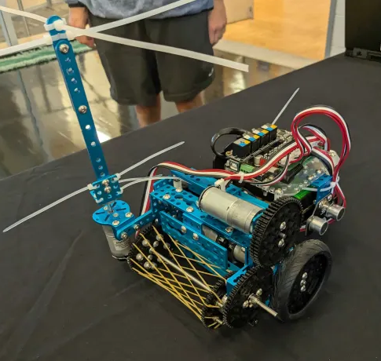

Alex Montello | Robotics Projects
Sursum Ad Junction
- FTC POWERPLAY season robot: the goal was to move plastic cones 5 inches tall, one at a time, onto increasingly tall, sprung poles
- Mecanum drivetrain with color sensors, deadwheel odometry, and heading lock
- <4s cycles onto highest possible pole
- Virtual 4 bar arm (belted) with horizontal geared claw
- >1m of vertical extension with vertical slides, assisted by constant torque springs
- Robust shell and walls
Nerf Gun Turret
- 30:1 gear ratio turret for yaw rotation
- Spool and string for pitch rotation
- YOLOv8 AI model to detect people (or other common objects)
- Proportional control loop to align with detections without oscillation
- Communication from python to Arduino through serial
- >8 frames processed and commands sent per second using OpenCV
- Rapid fires as long as a target is centered
2-Axis Gantry
- Controlled by 2 stepper motors with GT2 belts
- Operable manually using a joystick, or automatically
- Adjustable size using custom 3D printed clamps located on the belts and bases
- Single servo end effector for X, Y, and Z movement
- Uses an edge detection based approach to convert color images into minimal traceable paths with a pen fully autonomously
- Graphs mathematical functions or parametric equations accurately
- Random DFS based maze generation algorithm and optimized tracing paths to draw large mazes
Stretching Robot
- 4 mecanum wheels (geared with 19.2:1 DC motors for speed)
- 3 stages of linear slides on each side with >1.3m of horizontal extension
- Multiple modes of control possible, including one joystick for each side of the drivetrain, one joystick for translation and the other for rotation/extension/contraction, and 2 controller mode
- Scissor linkage and mesh tube for wiring
3 DOF Arm
- Turret driven internally with a 4.32:1 gear ratio and unlimited rotation
- Powered by batteries and controlled by Arduino
- Inner link of arm powered directly by 2 servos, outer link powered by 1 servo indirectly via a 4 bar linkage
- Uses inverse kinematics to calculate angles(absolute for arm links and relative for turret) to any point in 3D space reachable by the arm
- Effector mounts a small camera module
Entrapption Contraption
- FTC CENTERSTAGE season robot: the goal was to intake plastic, hexagonal 'pixels' in pairs and output them on a tall board angled 30 degrees from vertical
- 2 stages of rubber spinning wheels chained together to flip the game pixels into the robot, mounted on a belted arm to be able to intake stacked pixels
- Triangular conveyor belt transfer mechanism to carry pixels from the intake to the output pockets
- 970mm of vertical extension using linear slides, as well as a second belted arm housing 2 plungers to precisely score the pixels
- <12s cycle time from intake to output
- Paper airplane launcher
- Parallel plate mecanum drivetrain with 3 deadwheel odometry pods
- 30s autonomous programming using object detection, and a finite state machine
- Driver assists with distance and touch sensors
- Mechanism for suspending robot from elevated bars
Balancing Robots
- First uses 1 bevel geared wheel and a breadboard on a rack and pinion to balance in 2 dimensions
- Second uses 2 wheels to balance in 1 dimension (I had no picture)
- Proportional and derivative control loops with accelerometer data to balance in response to disturbances
- Battery pack and Raspberry Pi Pico microcontroller
- Only somewhat effective, the 2 wheeled version was significantly more responsive
Pac-Man Robot
- 2 wheels and a caster
- Hyperboloid rubber band intake into a vertical storage system holding >15 objects (for 1 inch diameter balls and larger foam cubes)
- Completely autonomous maze solving ability using 2 ultrasonic distance sensors and recursive depth-first approach
- Rotating bristle mechanism to intake from tall towers
- Assists for driving straight and automations
Block Collecting Robot
- 2 wheels and a caster
- Plow with stabilizing arm movable to either side of the plow
- Elastic defensive scissor linkage system to blockade opponent's scoring, deployed by a rack and pinion mechanism at the start of matches
- Completely autonomous control using 4 photoresistor color sensors
- Battery operated and controlled by a Raspberry Pi Pico